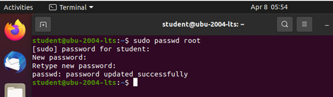

Hyvä salasana:
- on pitkä, nyrkkisääntönä 15 merkkiä
- ei ennalta arvattava (salasana123, qwerty, password)
- ei koostu pelkistä sanakirjasanoista
- mieluummin lause kuin sana
- sisältää erikoismerkkejä; %&//()=
- käytössä vain yhdessä palvelussa
- vaihda säännöllisesti
Ohje Root- salasanan vaihtamiseen Ubuntussa
- Avaa terminaali
- Syötä terminaaliin pääsalasanasi vaihtokomento
Järjestelmä kehottaa sinua syöttämään salasanasi - tämä on sama salasana, jota käytät kirjautuessasi järjestelmään.
Seuraavaksi järjestelmä pyytää sinua syöttämään uusi salasana kahteen kertaan. Tämä kaksinkertainen merkintä vahvistaa, että olet kirjoittanut salasanan oikein.

Ohje Root- salasanan palauttamiseen Ubuntussa
Joissakin tilanteissa saattaa joutua käyttämään tiliä, jonka salasana on kadonnut tai unohtunut. Tällöin joudutaan vaihtamaan pääkäyttäjän salasana, jotta mm. ohjelmien asennus ja päivitysten tekeminen onnistuu.Salasanan palauttaminen Ubuntussa onnistuu kolmessa yksinkertaisessa vaiheessa:
- Koneen BIOS-käynnistysvaiheessa tulee pitää SHIFT-näppäintä pohjassa, jolloin pääsee valikkoon, josta voi valita vikakorjaustilan (Recovery Mode). Seuraavasta valikosta tulee valita vaihtoehto, jolla pääsee pääkäyttäjänä komentokehoitteeseen joskin vielä ainoastaan lukutilassa.
- Komennolla mount -o rw,remount / saa uudelleenmountattua tiedostojärjestelmän siten, että käyttäjällä on kirjoitusoikeus sen tiedostoihin.
- Seuraavaksi syötetään tuttu komento passwd uname esim. passwd root, jonka jälkeen päästään syöttämään uusi UNIX-salasana kahteen kertaan ja vaihtamaan salasanaa.